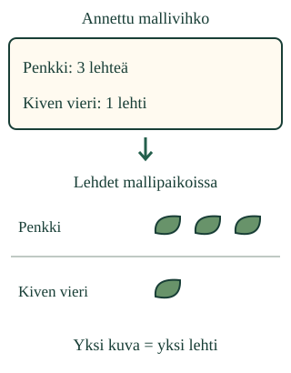

Kuva toiselle lukijalle
Loikka ei ollut mukana malliretkellä. Aava näyttää mallivihkon. Miten Loikka löytää esityksestä sekä paikan että määrän?
Teen esityksen, josta toinen voi lukea mallihavainnot.
Mitä haluat kertoa?
Lehden reiän paikka näkyy hyvin piirroksessa. Jos haluat verrata lehtien määriä kahdessa paikassa, samanlaisista kuvamerkeistä tehty kuva tai pieni taulukko voi auttaa. Valitse esitystapa sen mukaan, mitä lukijan pitää saada selville.

Esimerkki: kuvasta luettavat määrät
Penkki-rivillä on kolme lehden kuvaa. Kiven vieri -rivillä on yksi. Ohje “yksi kuva = yksi lehti” kertoo, miten määrää luetaan. Merkit ovat samankokoisia. Loikka etsii ensin paikan ja laskee sitten sen merkit.
Esimerkki: sama tieto taulukkona
| Paikka | Lehtiä |
|---|---|
| Penkki | 3 |
| Kiven vieri | 1 |
Taulukko kertoo samat määrät. Myös se voi toimia. Rivien järjestyksen voi vaihtaa, kun paikka ja määrä pysyvät yhdessä.
Ansakohta: kuvan pitää kertoa juuri nämä tiedot
Kolme kuvaa väärän paikan kohdalla ei kerro mallihavaintoa oikein. Yksi suuri lehden kuva ei automaattisesti tarkoita kolmea lehteä. Tässä kuvassa merkkien lukumäärä ratkaisee. Älä lisää merkkejä vain koristeluksi.
Ennusta: jos paikkojen nimet peitettäisiin, tietäisikö Loikka, mistä lehtiä löytyi? Entä jos selite puuttuisi?
Rakenna esitys mallivihkosta
Harjoituksen mallihavainnot — kuvitteellinen tilanne. Valmis lähdevihko annetaan sinulle; sinun ei tarvitse ensin kerätä tai kirjata näitä tietoja.
Valitse kullekin riville paikka ja määrä. Tyhjä ruutu odottaa vastausta; 0 on havaittu nollamäärä.
Tee esitys ja vertaa sitä mallivihkoon.
Apua esityksen tekemiseen
Etsi yksi paikka annetusta vihkosta. Valitse sama paikka oman esityksesi riville ja merkitse sen määrä. Tee sitten toinen rivi. Jokaiselle paikalle kuuluu yksi rivi. Vaihda kuvan ja taulukon välillä: pysyvätkö tiedot samoina? Aikuinen voi lukea nimet.
Valitse esityksen jokaisen rivin paikka ja kirjoita sen määrä. Voit antaa määrän suoraan; kuvia ei tarvitse napauttaa. Tyhjä määrä ei ole sama kuin nolla. Nolla kertoo, ettei siinä mallipaikassa havaittu yhtään laskettavaa asiaa.
Kuva ja taulukko muodostuvat sinun valitsemistasi tiedoista. Kysymysmerkki tarkoittaa täydennettävää tai korjattavaa tietoa.
Oma esitys säilyy tässä harjoituksessa. Sitä ei tallenneta, kun poistut tai alustat harjoituksen.
Uusi tilanne: kukat ja alustat
Toisessa mallivihkossa lasketaan kukkia kahdelta alustalta. Molemmilla on kaksi: kummassakaan ei ole enemmän. Kolmannessa tutkitaan kolmea alustaa; yhdellä ei ole yhtään lehteä. Tee näistä esitykset ja osoita, mistä toinen lukija löytää kunkin paikan tiedon.
Näiden mallien määrät kertovat vain kyseisistä kuvitteellisista tilanteista. Niistä ei päätellä, missä yleensä kasvaa eniten kukkia tai mistä aina löytyy lehtiä.
Jatka alla omaa esitystäsi. Harjoituksen ”Toinen mallivihko” aloittaa uuden mallivihkon; pelkkä näkymän avaaminen säilyttää nykyiset kirjauksesi.
Jatka omaa esitystä tässä
Malli on ilman JavaScriptiä alkuperäisessä kohdassaan: avaa mallin kohta.
Lisätutkimus
Tehkää luokassa pieni oikea havainto aikuisen kanssa ja kirjatkaa se ensin. Kokeilkaa sen jälkeen piirrosta, taulukkoa ja kuvamerkkejä. Mitä kysymystä kukin auttaa lukijaa selvittämään? Esimerkiksi reiän sijainti tarvitsee erilaisen kuvan kuin lehtien määrän vertailu.
Opettajalle: esittäminen, tuki ja rajat
Vuosiluokat 1–2. Vaadittu esitieto SCI-ENV-OBSERVE-01. Kirjaamisnoodia ei lisätä esitietolukoksi: lähdevihko ja sen lukemisen malli annetaan. Määriä 0–3, pieniä numeroita sekä paikkojen nimiä käytetään; aikuinen voi tukea lukemista ja määrän tulkintaa.
Oppilas kokoaa paikkojen ja määrien esityksen. Valmiin oikean esityksen tunnistamista ei väitetä esityksen rakentamiseksi. Otsikko, laskettava asia ja yhden merkin selite ovat tässä annettu tuki, eivät oppilaan itse tuottamaa tekstiä. Taulukko ja kuvamerkit sekä paikan ja määrän säilyttävä rivijärjestys ovat päteviä vaihtoehtoja.
Offline: tehkää esitys oikeista havainnoista vasta havaintojen ja kirjausten jälkeen. Aikuinen seuraa erikseen, löytääkö toinen lukija tarvittavan tiedon. Ohjelma ei keksi lapselle havaintoja eikä arvioi vapaata esitelmää, fyysistä keräämistä, kaunista piirrosta tai kaikkien esitystapojen hallintaa.
Palaute koskee pientä tuettua harjoitusta. Ei tallennusta, pisteitä, muodollista hallintanäyttöä, itsenäisyyden tai pysyvän oppimisen päätelmää. Ei kerro mitään lehtien tai kukkien todellisesta yleisyydestä.
Lopuksi
Näytä toiselle yhden paikan tieto omasta esityksestäsi. Mitä lisäisit, jos hän ei tietäisi, mitä kuvan merkit tarkoittavat?